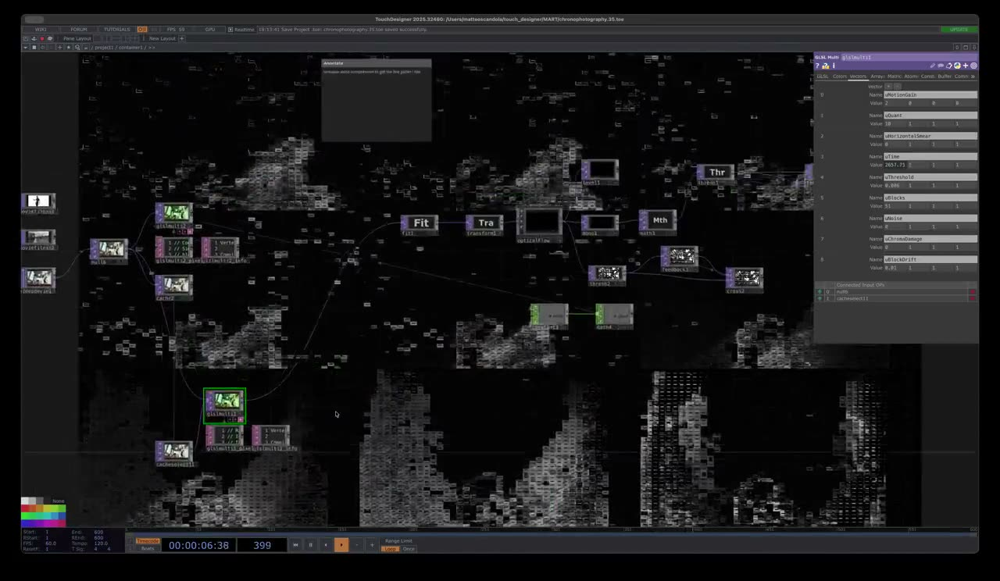
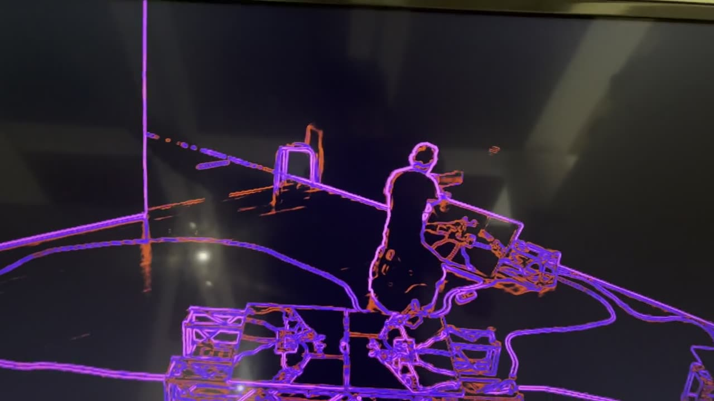
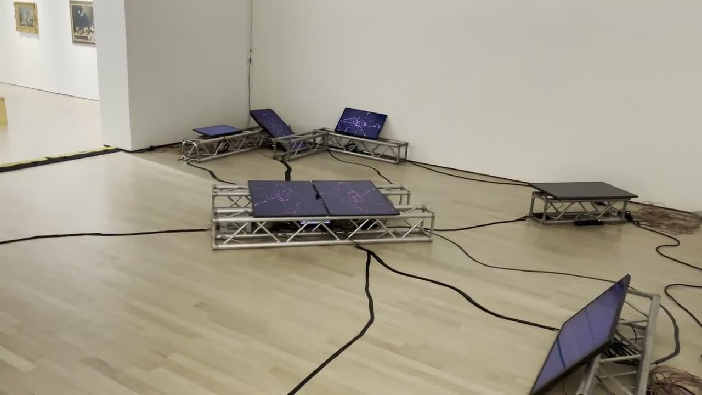
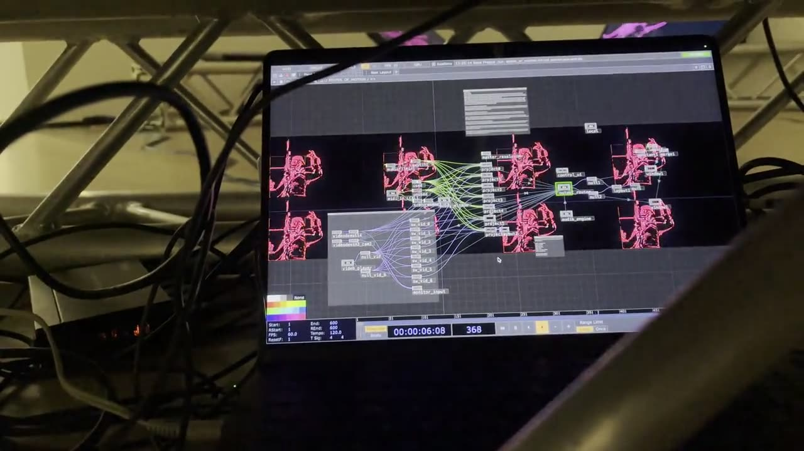
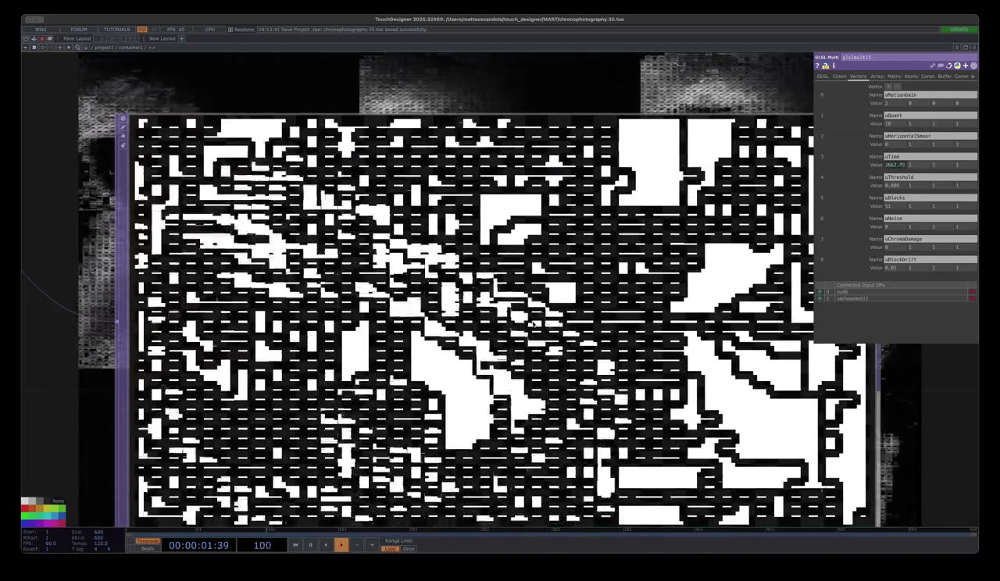
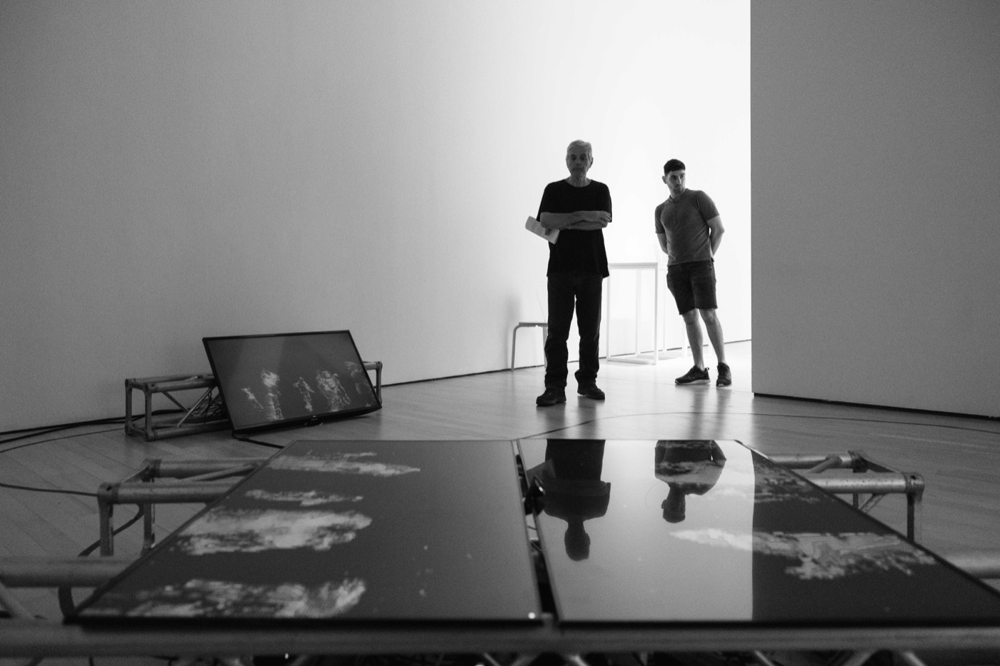
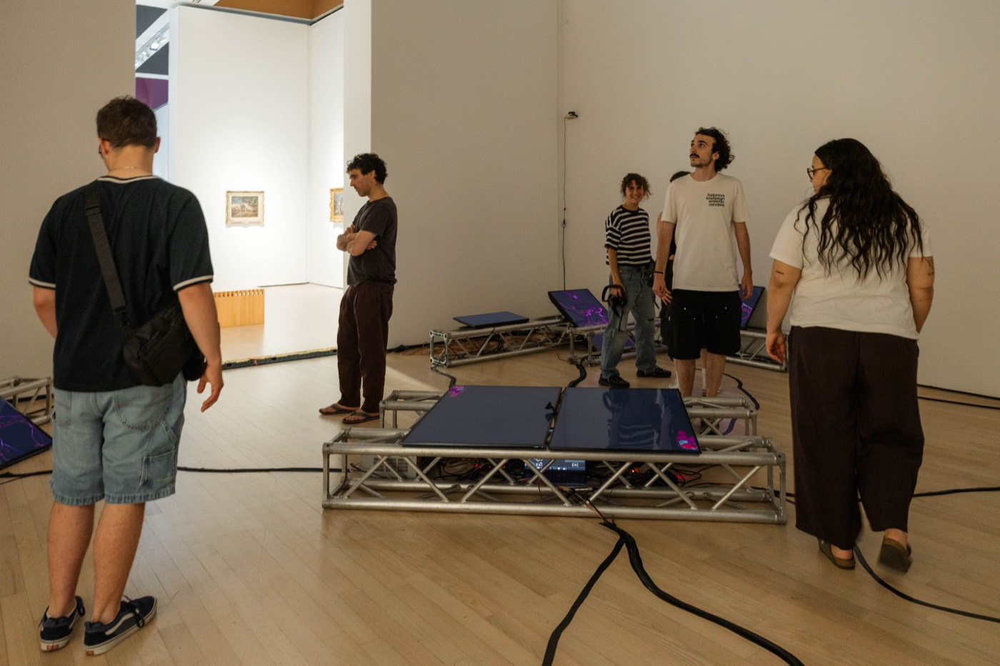

CH 01 // INSTALLATION
States of Motion
MART MUSEUM
30–31 MAY 2026 · ROVERETO IT
POPLAR-UTOPIA FESTIVAL
“Rebuild it with the materials of your time.”
— Giacomo Balla, found by Elio Marchigiani under a cardboard flower





The present is fed back into itself until the image no longer resembles what entered. Memory is not stored — it is metabolized.
Every position a body has occupied, held simultaneously. Past and present occupy the same surface.
Only the parts of the signal that move survive. The rest decays into blocks — data corruption as the truest portrait of flux.
The body reduced to the line where it ends and the world begins. That line accumulates, and persists after the body has moved on.
The same figure shown now and a few seconds ago, in the same frame. You are here, and you were here, and both are true at once.
A live audiovisual instrument that processes the present through feedback, temporal displacement, and signal degradation. A live camera enters the system and is acted upon immediately — accumulated, run back through itself, distributed across screens in space.
Your body is the input. The system does the rest.
With Consuelo Donati & Luca Richelli
Photo: @raw_sario / Rosario Multari


